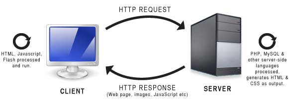

SIN 143
Laboratório de programação
Aula 01
Introdução ao desenvolvimento WEB
Prof. Clausius Reis - LAE 279
SIN 143 - Informações e horários
Semestre: Primeiro semestre
Ano: 2023
Pré-requisitos
- SIN 141 - Computação Orientada a Objetos
- SIN 220 - Banco de Dados
Carga horária: 60 horas (30 teóricas e 30 práticas)
SIN 143 - Informações e horários
Horários T1:
- Segunda-feira: 16h00-17h40 - PVA 226 (Lab)
- Quinta-feira: 14h00-15h40 - PVA 209
Horários T2:
- Segunda-feira: 21h00-22h40 - PVA 226 (Lab)
- Quinta-feira: 19h00-20h40 - PVA 226 (Lab)
SIN 143 - Informações e horários
- Aulas presenciais (acabou a vida de youtuber)
- Conteúdo e tarefas na página do PVANet Moodle
Objetivos (Geral):
Capacitar o aluno no desenvolvimento de aplicações, envolvendo a pratica de conceitos de programação WEB, orientação à objetos, uso de banco de dados relacional e elaboração de projeto de sites web dinâmicos.
Objetivos (Específicos):
- Conhecer novas tecnologias em linguagens de programação web;
- Elaborar modelo conceitual de banco de dados;
- Entender o modelo MVC e arquitetura Cliente-Servidor;
- Aplicar os conhecimentos de Orientação à Objetos em programação web.
Conteúdo da disciplina:
- Parte 1 - Orientações da disciplina
- Introdução à programação para web e programação distribuída
- Modelo de programação Cliente-Servidor
Conteúdo da disciplina:
- Parte 2 - Web estática
- HTML / HTML5
- CSS / CSS3
- Javascript
Conteúdo da disciplina:
- Parte 3 - Web dinâmica
- Servidores (Apache, PHP, MySQL)
- PHP / Funções PHP
- Orientação à objetos em PHP
Conteúdo da disciplina:
- Parte 4 - Banco de dados
- Servidor de banco de dados MySQL
- Comandos SQL
Conteúdo da disciplina:
- Parte 5 - Comunicação assíncrona
- Uso do JQuery para criar comunicação assíncrona com a web.
Conteúdo da disciplina:
- Parte 6 - Projetos práticos
- Projeto prático aplicando os conceitos aprendidos na disciplina
- Criação de um sistema completo para web com conteúdo dinâmico e acesso à banco de dados
Método de ensino:
- Aulas Presenciais
- Pesquisa em livros, artigos acadêmicos e tutoriais disponíveis na Web
- Exercícios práticos desenvolvidos sobre o conteúdo visto na semana
- Projetos práticos aplicando os conteúdos vistos em aula
Avaliação:
- Avaliações serão feitas na forma de
- Trabalhos sobre os conteúdos vistos
- 60 pontos distribuídos entre as aulas práticas
- Projetos sobre tema a ser definido
- Nota final = Soma dos trabalhos + projetos
Avaliação:
- As avaliações dos trabalhos e projetos serão feitas de acordo com requisitos definidos na descrição dos mesmos
Frequência:
- O limite de faltas é 25% do total de aulas (T/P)
- O aluno que ultrapassar esse limite estará reprovado por faltas (conceito L)
Plágio:
- O plágio em trabalhos serão punidos com nota zero no trabalho:
- Ou até mesmo nota zero na disciplina dependendo da extensão do plágio
- O PLÁGIO consiste, basicamente, na cópia de textos completos, trechos de texto ou textos baseados em outros textos sem citar a fonte
Entendendo a diferença entre as tecnologias básicas.
HTML/HTML5
CSS/CSS3
Javascript
HTML/HTML5
- HTML significa Hyper Text Markup Language
- É a linguagem de marcação padrão para o desenvolvimento de páginas WEB
- Descreve a estrutura de uma página WEB
- Consiste em uma série de elemento que informam ao browser como o conteúdo deve ser exibido na tela:
(Caixas de texto, Botões, Imagens, Containers, Fórmulários, Listas, Etc.)
Papel do CSS
- Definição do estilo (Visual) de um documento HTML
- Tamanho e cores dos elementos da página
- Posicionamento dos containers (DIV) na página
- Ações por interação com elementos da página
- Economiza muito tempo, uma vez que pode controlar o layout de múltiplas páginas
Exemplo do efeito do CSS sobre uma página.
Papel do Javascript
- Javascript é a linguagem de programação utilizada para interagir com o código HTML
- Responsável por:
- Preenchimento e alteração dinâmica dos componentes HTML
- Validação de dados
- Comportamento da página
- A "Programação" efetivamente falando...
Plugin excelente para testar o funcionamento dos sites.
Chrome Web Store: Web developer
Demonstração...
Façamos uma análise em alguns sites
Front-end
Tecnologias que rodam no cliente (Browser)
CSS, HTML, Javascript
Back-end
Tecnologias que rodam no servidor
O conteúdo é gerado dinamicamente
Arquitetura cliente-servidor

Arquitetura cliente-servidor
Qual a importância de saber HTML/CSS/Javascript?
Com tantas ferramentas para o desenvolvimento automático de páginas WEB e até sistemas, porquê preciso aprender HTML/CSS/Javascript?
Para o usuário básico talvez não seja importante, mas para nós...hehehe!
HTML, CSS e Javascript (entre outras)
é o que move a WEB
Sistemas prontos tem limitações, estão fadados a entregar o mesmo resultado
Saber HTML/CSS/Javascript permite personalizar os sites para um perfil desejado, otimizar o carregamento e reduzir a geração de código redundante
Como linguagens de marcação diferem em relação à outras linguagens de programação?
HTML é uma linguagem de marcação (Estrutura)
CSS é uma linguagem de estilos (Visual)
Ambas não tem uma lógica por trás
Próxima aula
Introdução ao HTML